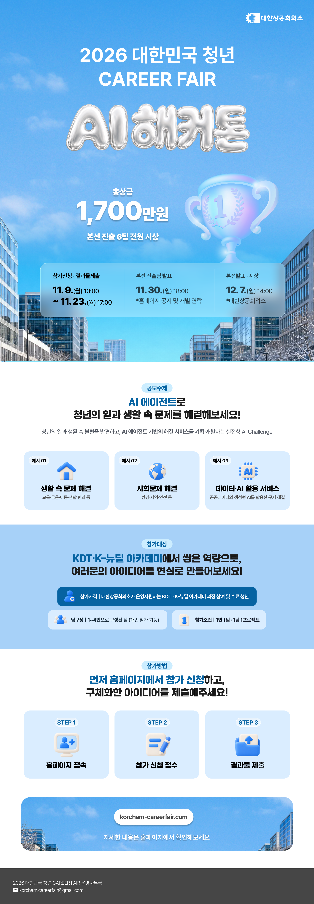

2026년 11월 22일에 보관한 공개 신청 안내와 동의문입니다.

공식 포스터 원본 · 포스터에 인쇄된 주소 korcham-careerfair.com
대한상공회의소는 「2026 대한민국 청년 CAREER FAIR AI 해커톤」(이하 ‘해커톤’) 참가신청 접수 및 운영을 위하여 아래와 같이 개인정보를 수집·이용합니다.
㈜NHR은 대한상공회의소로부터 위탁받아 참가신청 접수, 참가자 관리, 운영 안내, 심사 운영 지원 및 결과보고서 작성 등 해커톤 운영 업무를 수행합니다.
1. 수집·이용 항목
[대표자 정보]
- 이름, 휴대전화번호, 이메일주소
[팀원 정보 — 대표자 포함]
- 팀 구성 구분(대표자·팀원), 이름, 휴대전화번호
- 교육·훈련과정 참여 연도, 교육·훈련과정의 운영·지원 기업명 및 과정명, 팀 내 역할
[참가 자격 확인을 위해 이용하는 기존 보유 정보]
- 대한상공회의소가 보유한 팀원 전원(대표자 포함)의 훈련 참여·수료 정보(성명, 교육·훈련과정명, 참여·수료 여부)
[참가팀 정보]
- 팀명, 구성 인원, 프로젝트명, 프로젝트 주제 및 아이디어
[운영 과정에서 생성되는 정보]
- 신청·변경·취소 일시, 신청 상태, 참가 자격 확인 결과, 문의·응답 기록
※ 팀원 정보는 대표자가 입력합니다. 대표자는 입력 전에 각 팀원에게 개인정보 수집·이용 및 제3자 제공 동의 내용을 안내하고, 각 동의 사항과 대리 입력에 대한 확인을 받아야 합니다.
※ 과제 제출 단계에서 수집하는 제출자료와 그 이용에 관한 사항은 해당 단계에서 별도로 안내합니다.
※ 상금 지급 및 세무 처리에 필요한 개인정보는 수상자에 한하여 수집 항목, 처리 근거 및 보유기간 등을 별도로 안내한 후 수집합니다. 참가신청 단계에서는 주민등록번호와 계좌정보를 수집하지 않습니다.
2. 수집·이용 목적
- 참가자 식별, 참가신청 접수 및 참가 자격 확인
- 참가 자격 확인을 위해 대한상공회의소가 보유한 팀원 전원(대표자 포함)의 훈련 참여·수료 정보를 확인할 수 있음
- 신청·변경·취소 내역 관리 및 접수 현황 파악
- 과제 제출 링크 발송, 해커톤 일정 및 참여 방법 안내, 공지사항 전달과 문의 대응
- 예선·본선 심사를 위한 참가자 정보 확인, 수상자 선정 및 시상 운영
- 수상자 및 상금 지급 대상자 확인
- 행사 운영 실적 집계 및 결과보고서 작성
- 개인을 알아볼 수 없는 형태의 통계 작성 및 해당 통계를 활용한 차년도 행사 기획
※ 교육·훈련 프로그램 홍보를 위한 연락은 별도의 선택 동의를 받은 경우에만 진행합니다.
3. 보유·이용기간 및 파기
- 수집일로부터 행사 종료 후 1년까지 보유·이용한 후 지체 없이 파기합니다.
- 위 기간이 경과하기 전이라도 처리 목적이 달성되어 불필요해진 개인정보는 지체 없이 파기합니다.
- 참가 철회 또는 개인정보 삭제를 요청한 경우에는 본인 확인 후 불필요해진 개인정보를 지체 없이 파기합니다.
- 개인정보 수집·이용 동의를 철회한 경우에는 해당 동의에 따른 처리를 중단하고 개인정보를 파기하는 등 필요한 조치를 합니다.
- 다만, 관계 법령에 따라 보관 의무가 있거나 동의 외의 적법한 처리 근거가 있는 정보는 필요한 최소한의 범위에서 별도로 보관하며, 해당 정보와 보관 사유 및 기간을 안내합니다.
- 전자파일은 복구·재생할 수 없는 방법으로 삭제하고, 종이 문서는 분쇄 또는 소각하여 파기합니다.
4. 동의 거부 권리 및 동의 거부 시 불이익
귀하는 개인정보 수집·이용에 대한 동의를 거부할 권리가 있습니다.
다만, 위 정보는 참가신청 접수 및 해커톤 운영에 필요한 정보이므로 동의하지 않는 경우 해커톤 참가신청을 완료할 수 없습니다.
참가 후 동의를 철회하여 참가 자격 확인, 심사 또는 시상에 필요한 개인정보를 처리할 수 없게 되는 경우에는 해당 절차의 진행이 제한될 수 있습니다.
5. 권리 행사 및 문의 방법
개인정보 열람, 정정·삭제, 처리정지 및 동의 철회는 아래 운영사무국으로 요청할 수 있습니다. 팀원은 대표자를 거치지 않고 본인의 개인정보에 관한 권리를 직접 행사할 수 있습니다.
- 담당: 2026 대한민국 청년 CAREER FAIR 운영사무국
- 전화: 02-6953-6856
- 이메일: korcham.careerfair@gmail.com
본인은 위 내용을 확인하였으며, 개인정보 수집·이용에 동의합니다.
본인은 참가신청서에 기재한 모든 팀원에게 다음 내용을 안내하였습니다.
1. 개인정보 수집·이용 동의의 수집 항목, 이용 목적, 보유기간, 동의 거부 권리 및 불이익
2. 개인정보 제3자 제공 동의의 제공받는 자, 제공 항목, 이용 목적, 보유기간, 동의 거부 권리 및 불이익
3. 본인이 팀원의 개인정보를 대신 입력하여 해커톤 참가신청을 진행한다는 사실
4. 참가 자격 확인을 위해 대한상공회의소가 보유한 팀원 전원(대표자 포함)의 훈련 참여·수료 정보를 확인할 수 있다는 사실
본인은 대표자로서 위 개인정보 수집·이용 및 제3자 제공과 참가 자격 확인을 위한 훈련 참여·수료 정보 확인에 동의합니다. 또한, 각 팀원에게 위 내용을 안내하고 해당 동의와 대리 입력·참가신청에 대한 위임을 받았음을 확인합니다.
※ 모든 팀원의 동의 및 확인을 받은 후 본 항목에 체크해 주세요.
※ 개인 참가자는 본인에 관한 동의 내용을 확인한 후 체크해 주세요.
※ 본 확인에는 선택 사항인 교육·훈련 프로그램 홍보 정보 수신 동의가 포함되지 않습니다.
대한상공회의소는 「2026 대한민국 청년 CAREER FAIR AI 해커톤」의 참가 자격 확인 및 심사를 위하여 참가신청 정보 중 아래 항목을 외부 심사위원에게 제공합니다.
1. 개인정보를 제공받는 자
- 본 해커톤의 심사를 위해 위촉된 심사위원
※ 심사위원의 성명 및 소속은 정보 제공 전에 홈페이지 공지 또는 별도 안내를 통해 확인할 수 있도록 합니다.
2. 제공하는 개인정보 항목
- 참가팀 정보: 팀명, 구성 인원, 프로젝트명, 프로젝트 주제 및 아이디어
- 팀원 정보: 이름, 교육·훈련과정 참여 연도, 교육·훈련과정의 운영·지원 기업명 및 과정명, 팀 내 역할
※ 과제 제출 단계에서 제공하는 결과물 및 관련 정보는 해당 단계에서 별도로 안내하고 동의를 받습니다.
3. 제공받는 자의 개인정보 이용 목적
- 참가팀의 교육·훈련 이력 등 참가 자격 확인
- 참가팀 구성 및 역할 확인
- 신청한 프로젝트명, 주제 및 아이디어 검토와 심사
4. 제공받는 자의 개인정보 보유·이용기간
- 정보 제공 시부터 해당 심사위원의 심사업무 종료 시까지 보유·이용합니다.
- 심사업무 종료 즉시 시스템 열람 권한을 회수하고, 심사위원이 별도로 보관한 개인정보 및 심사자료는 지체 없이 삭제하거나 반환하도록 합니다.
- 심사위원은 제공받은 개인정보와 자료를 위 목적 외로 이용하거나 다른 사람에게 전달할 수 없습니다.
5. 동의 거부 권리 및 동의 거부 시 불이익
귀하는 개인정보 제3자 제공에 대한 동의를 거부할 권리가 있습니다.
다만, 동의하지 않아 외부 심사위원에게 참가 자격 확인 및 심사에 필요한 정보를 제공할 수 없는 경우 해당 확인 또는 심사 절차의 진행이 제한될 수 있습니다.
동의 철회 이후에는 추가 제공을 중단하고, 이미 제공된 개인정보에 대해서도 삭제 요청 등 필요한 조치를 합니다. 다만, 철회로 인해 참가 자격 확인 및 심사에 필요한 개인정보를 처리할 수 없게 되는 경우에는 해당 절차의 진행이 제한될 수 있습니다.
6. 권리 행사 및 문의 방법
개인정보 제공에 관한 문의 및 동의 철회는 아래 운영사무국으로 요청할 수 있습니다.
- 담당: 2026 대한민국 청년 CAREER FAIR 운영사무국
- 전화: 02-6953-6856
- 이메일: korcham.careerfair@gmail.com
본인은 위 내용을 확인하였으며, 개인정보 제3자 제공에 동의합니다.
대한상공회의소는 「2026 대한민국 청년 CAREER FAIR」 종료 이후에도 운영지원하는 교육·훈련 프로그램을 안내·홍보하기 위하여 아래와 같이 개인정보를 수집·이용합니다.
㈜NHR은 대한상공회의소로부터 위탁받은 업무 범위에서 홍보 정보 발송 업무를 수행할 수 있습니다.
1. 수집·이용 항목
- 본 동의에 응답하는 대표자 본인의 이름, 휴대전화번호, 이메일주소
※ 팀원의 개인정보는 본 동의에 따른 홍보 목적으로 이용하지 않습니다.
2. 수집·이용 목적
- 대한상공회의소가 운영지원하는 교육·훈련 프로그램의 모집 일정, 신청 방법 및 참여 혜택 안내
- 해당 교육·훈련 프로그램의 홍보 정보 발송
3. 홍보 정보 수신 동의
본인은 대한상공회의소가 운영지원하는 교육·훈련 프로그램의 모집 및 홍보 정보를 문자메시지(SMS·LMS·MMS)와 이메일로 수신하는 데 동의합니다.
4. 개인정보 보유·이용기간 및 수신 동의 유효기간
- 동의일로부터 행사 종료 후 1년 또는 동의 철회 시까지 중 먼저 도래하는 때까지입니다.
- 기간이 만료되거나 동의를 철회하면 해당 홍보 목적의 이용과 발송을 중단하고, 해당 목적으로 보관하는 개인정보는 지체 없이 파기합니다.
- 다만, 다른 적법한 근거로 보관하는 정보는 해당 목적과 기간에 따라 관리합니다.
5. 동의 거부 권리 및 불이익
귀하는 개인정보 수집·이용 및 홍보 정보 수신에 동의하지 않을 권리가 있습니다.
동의하지 않아도 해커톤 참가신청, 과제 제출, 심사 및 시상에 불이익이 없습니다.
6. 동의 철회 및 수신거부 방법
안내 메시지에 표시된 수신거부 방법 또는 아래 운영사무국을 통해 동의를 철회하거나 수신을 거부할 수 있습니다.
- 담당: 2026 대한민국 청년 CAREER FAIR 운영사무국
- 전화: 02-6953-6856
- 이메일: korcham.careerfair@gmail.com
본인은 위 내용을 확인하였으며, 홍보 목적의 개인정보 수집·이용 및 문자·이메일 홍보 정보 수신에 동의합니다.